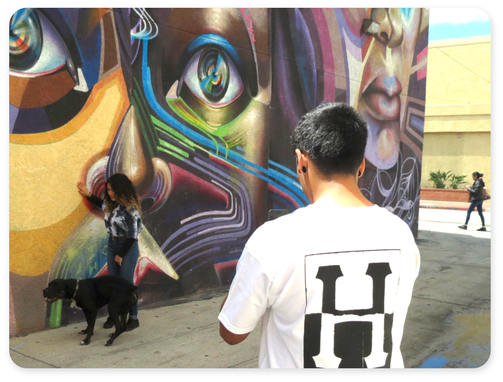
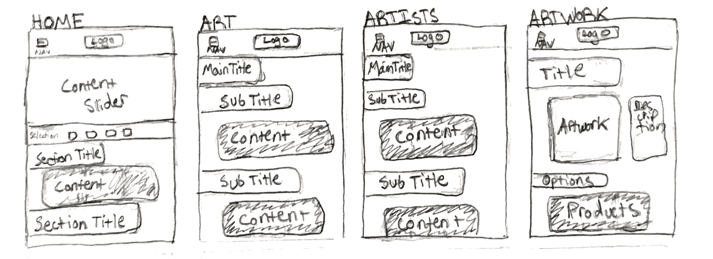

Inframe UX/UI

 The Inframe web experience is designed to give artists and their artworks a spotlight, in order to inform users about artists or artworks that they may not have known about.
The Inframe web experience is designed to give artists and their artworks a spotlight, in order to inform users about artists or artworks that they may not have known about.
My Roles
Brand Strategist, Graphic Designer, Responsive Web Designer
Brand Promise
Inspired by my love for art and the intention to generate income collaborating with peers across mediums.
Objective
A web experience, where users can easily find information about artists, subjects, artworks, and products they may be interested in.
Outcome
The responsive website allows users to easily get information about the artists and subjects who work with Inframe. Users will also find details about the artwork and the products.
Target Audience
Artists, Public Figures, Mid-High Income, Urban
Audience Needs
Users need a web experience where they can easily find information about an artist, subject, or artwork that they may be interested in. They would like to be informed about products personalized by the artist, subject, or another collaborator.


Challenge
Presenting a variety of essential information to users, within a user friendly interface. While representing the wide variety of artists and collaborators providing art and products.
Solution
To illustrate the variety of people apart of the brand I designed a flexible branding system with a few simple elements, and used these different graphic elements from the mark to represent the different people who make up the brand's collaborative community.
Initial Sketches


Design Process
When starting the wirerframing process, I focused on displaying a simple illustration of the brand’s goals and collaborative nature. This section is also an information slider which displays featured artwork.
During this time I experimented with the brands colors as well. I decided on a three color scheme to improve the contrast of different elements in the mark and in my layouts. When I finished refining the desktop and mobile layouts, I created a style guide using the elements from the web collateral.
Wireframes
Prototypes & Story
I was inspired to create this project because I see a need for artist to be able to collaborate with subjects who have large followings, and vice versa. I also see a need people to support with public figures they follow. To satisfy these needs I created a brand that provides direct support to an innovative community of artists, and subjects.

These first prototypes, bring sharper definition the content areas laid out in my wireframes. This was also the first use of the three color scheme I had chosen. The feedback I received from these prototypes, sparked my idea for a four color scheme, and the photo treatments I developed.

Photo Treatments

These photo treatments are essential to the style Inframe represents. They are used to showcase the artworks and the artists who create them. I emulated the brand by using the slanted box shape from the mark, and an opacity with the brand's tan color. I also used different groupings to show users similar artworks/artists or a wider variety of different artworks/artist. The single photo arrangement keeps the photo treatments consistent when focusing on one artwork or artist.
Final Deliverables